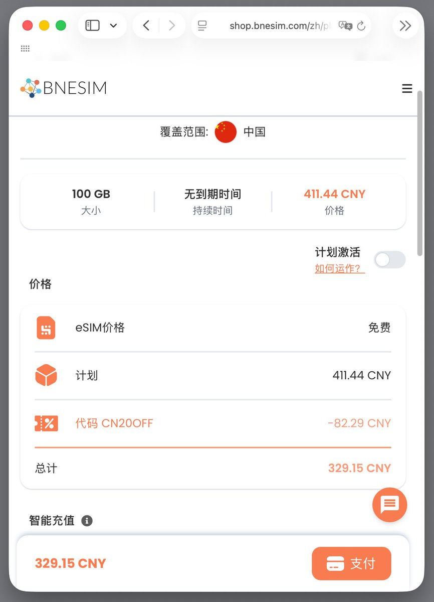
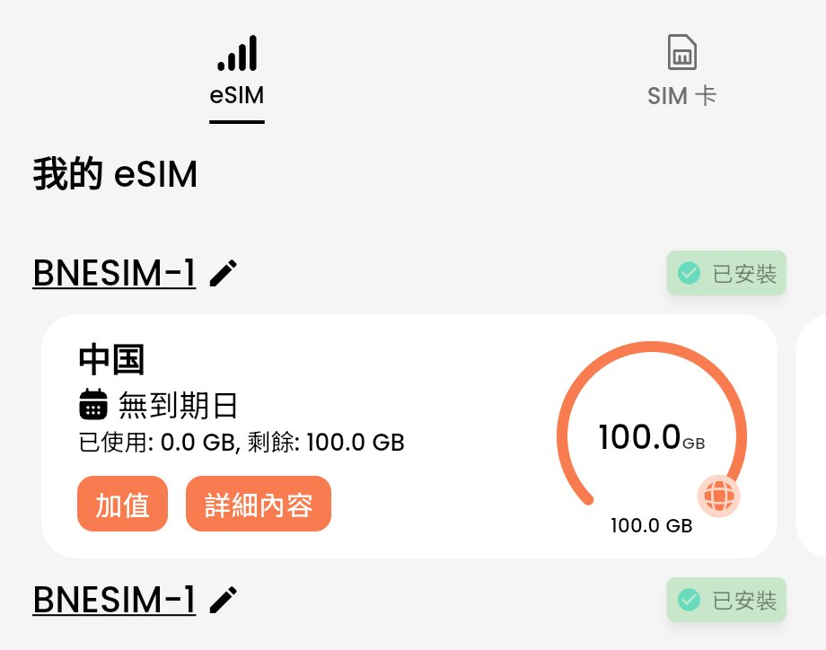

@bloom7187 如果你是轻度用户，我觉得100G你一年都用不完。可以考虑那家BNESIM，没有限制到期时间，但是略贵（一样都是CMLink的资源



应该是这家国人开的BNESIM的100GB无限量，使用CN20OFF可以打8折，折后329.15元。
跟之前推过的BananaTravelSIM（中澳台）、XPIN（亚太12地区）一样，都是CMLink的资源，境内走CMHK境外走的新加坡IP。
唯一的优点就是没有到期时间，比那些赌你有效期内用不完流量的商家友好不少，单价还有点进步空间。 https://t.co/aca3DnG5sd https://t.co/nOBNdUcQZ7
跟之前推过的BananaTravelSIM（中澳台）、XPIN（亚太12地区）一样，都是CMLink的资源，境内走CMHK境外走的新加坡IP。
唯一的优点就是没有到期时间，比那些赌你有效期内用不完流量的商家友好不少，单价还有点进步空间。 https://t.co/aca3DnG5sd https://t.co/nOBNdUcQZ7